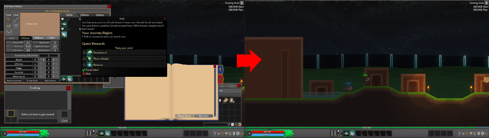
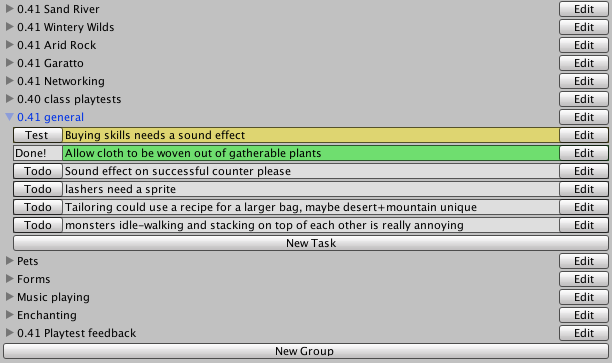
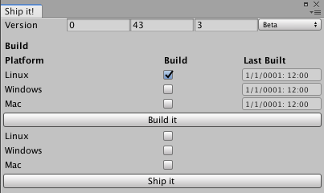

I've been working on Sealed World for just about seven years now, this page details some behind the scenes stuff that I've had to do over that time period!
Networking
Sealed World uses C# socket-based networking. I implemented my own solution before replacing it with Telepathy. Telepathy only handles the moving of bits back and forth, the rest of the networking logic was custom-built for sealed world. I use an "authoritative server" network model. Clients send their input to the game's host where all calculations are done. The host acts as a central source of truth for all players and handles all communications between players.
UI
Sealed World's UI has a lot going on.
So a major challenge of developing the game is both managing that complexity so people can interact with the game quickly and not get overwhelmed, while also making each bit memorable enough that people know what to look for right away. To that extent I've embraced the methodology of breaking the UI apart into windows, and making each of those windows look at least something remotely like an actual object. For example, the logbook window looks like an actual book while the dialog window resembled a dialog bubble coming out of the character you're talking to.
Devops
Devops for a solo project? Why yes, actually. Sealed World is very large and complex and planning it out is a bit of a nightmare. Hence I have created an extensive suite of tools for working with the game. Here's a few examples:
Kanban tool
I use Kanban to manage tasks. I've previously used trello but have switched to a self-made tool in-engine since it makes the workflow just that little bit much nicer. While I don't use things like due dates since this is a hobby project the methodology is perfect for a solo developer, since my bandwidth is exactly one task at a time. In the tool I break task lists up into groups for organizational reasons. Behind the scenes the data is stored as XML, which is synced across my desktop and laptop using Dropbox.
Build automation
I regularly deploy to PC, Mac, and Linux at the same time. To make that not a gigantic pain I've built a build automation tool. It automatically builds packages for each platform, then uploads them to my distributor of choice. The tool also handles versioning, which is used by the distribution platform to handle updates